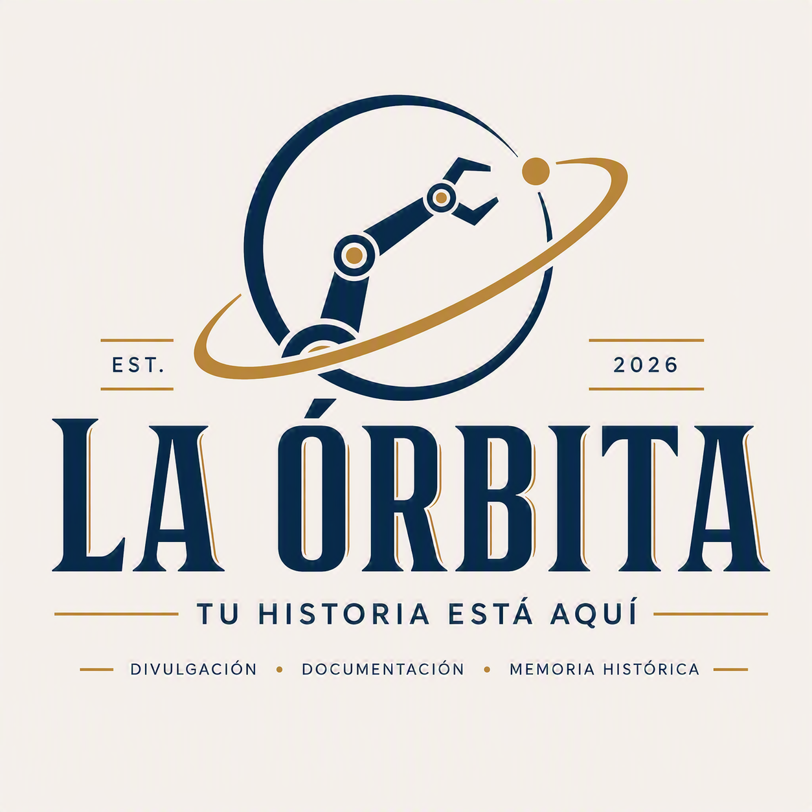

Conoce los orígenes, proyectos, logros y generaciones que han construido la historia del Taller de Robótica del Tec Madero.
El Taller de Robótica del Tec Madero se ha consolidado como uno de los espacios de innovación más importantes para los estudiantes interesados en la tecnología, la automatización y el desarrollo de proyectos multidisciplinarios.
A lo largo de los años, distintas generaciones han contribuido con conocimientos, experiencias y proyectos que han permitido construir una cultura de aprendizaje colaborativo.
Gracias a esta evolución constante, el taller ha participado en competencias, exposiciones y actividades de divulgación tecnológica que han fortalecido su presencia dentro y fuera de la institución.
Los orígenes del taller se remontan al interés de diversos estudiantes y docentes por fomentar espacios de aprendizaje práctico fuera del aula. Con recursos limitados pero grandes expectativas, comenzaron a desarrollarse proyectos que permitieron a los participantes experimentar con electrónica, programación y diseño mecánico.
Con el paso del tiempo, el taller amplió sus actividades y comenzó a involucrarse en exposiciones, competencias y proyectos de mayor alcance. Esta evolución permitió fortalecer la experiencia de los estudiantes y consolidar una cultura de trabajo colaborativo que continúa hasta la actualidad.
A lo largo de su historia, el taller ha participado en distintos proyectos orientados a la innovación tecnológica, la divulgación científica y la resolución de problemas reales. Cada iniciativa ha contribuido a enriquecer la experiencia de sus integrantes y a fortalecer la identidad de la comunidad.
El Taller de Robótica continúa evolucionando gracias al esfuerzo de sus integrantes y al interés constante por explorar nuevas tecnologías. Su historia sigue escribiéndose con cada generación, cada proyecto y cada desafío que impulsa a la comunidad a seguir innovando.